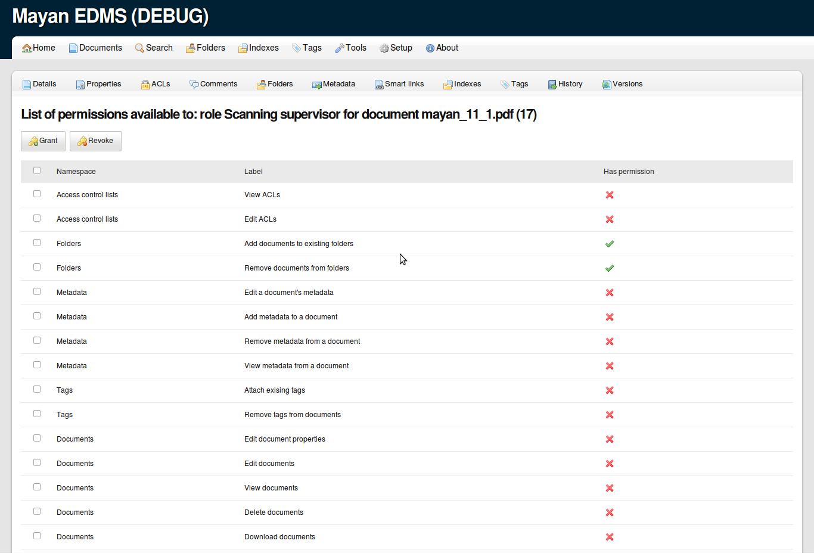
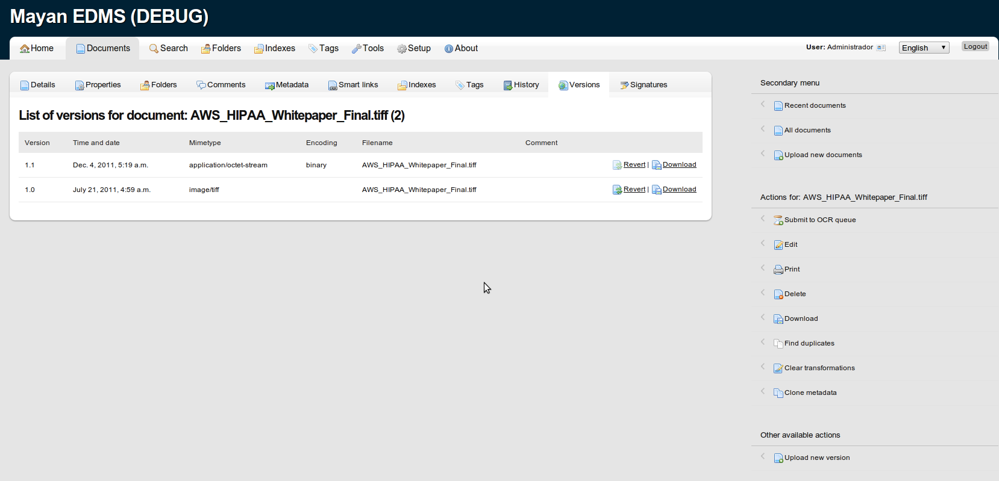

-
January 12, 2011
New Google group
To increase communication between users of Mayan EDMS, a Google group has been created, it is low volume and everything related to Mayan EDMS will be discussed there.

Subscribe to Mayan EDMS Visit this group -
December 19, 2011
Document level access support
Still many things left to do, but after much work the ACL subsystem is in a usable state. Document level access is already supported with folder and tag level access following suit.
 -
December 13, 2011
The Italian translation for Mayan EDMS has been completed, merged in the development branch and will be included in the upcoming version 0.12. Many thanks to SeeOpen.IT for this contribution.
-
December 7, 2011
Bugfix version v0.11.1
This is the first bugfix release of the .11 series, and includes the following:
- A documents deletion regression fix
- Improves error detection when importing keys from a keyserver
- Fixes a wrong method call when verifying signatures for the first time upon document uploading
- django-compress is now disabled by default to avoid problems when deploying with DjangoZoom
-
December 6, 2011
Mayan v0.11 released!
Highlights
Two of the most asked features have been included:
- Document signature verification support (both: embedded and detached)
- Document versioning support
The full changelog can be found here: http://readthedocs.org/docs/mayan
-
December 4, 2011
Document versioning
Multiple document versions is almost ready and will be included in the next version (v0.11), the REST API has also been updated to expose this new functionality.
 -
December 3, 2011
Digital signature verification
Digital signature verification has seen many updates but it is still uncertain if it will be complete enough to be included in the next version.

{kind=link}
{kind=link}